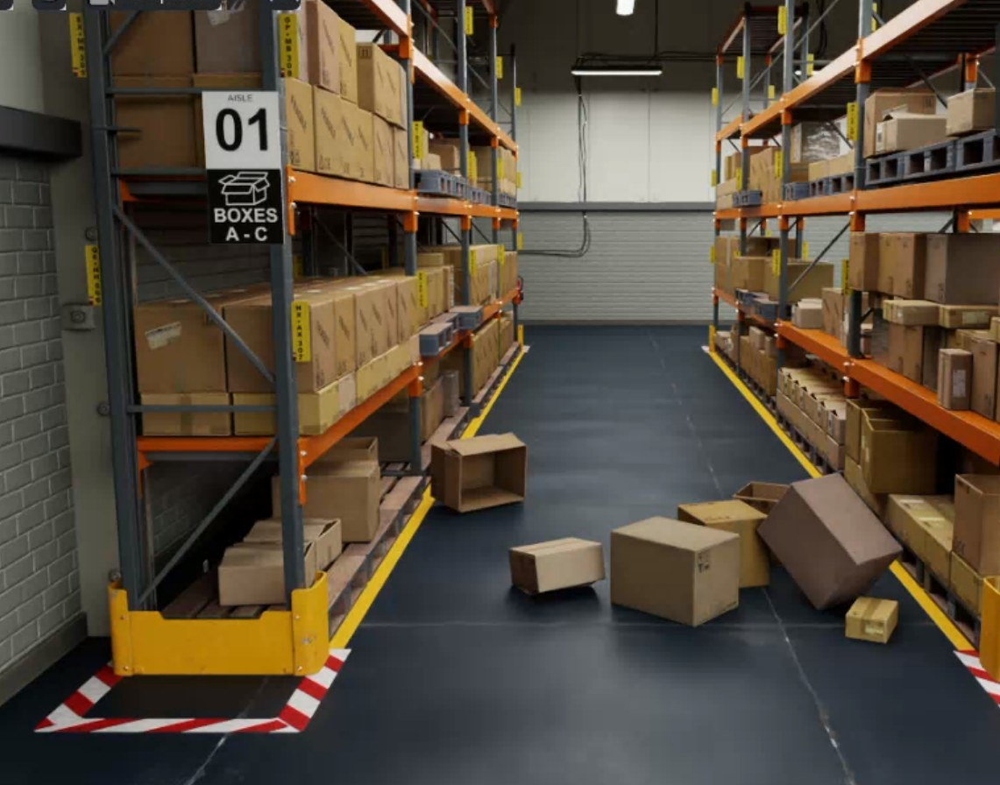
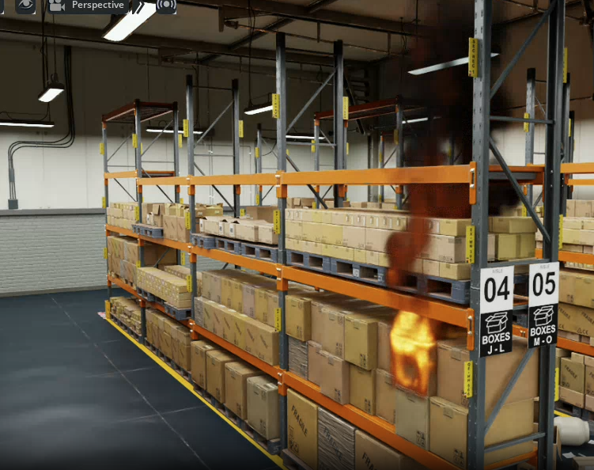
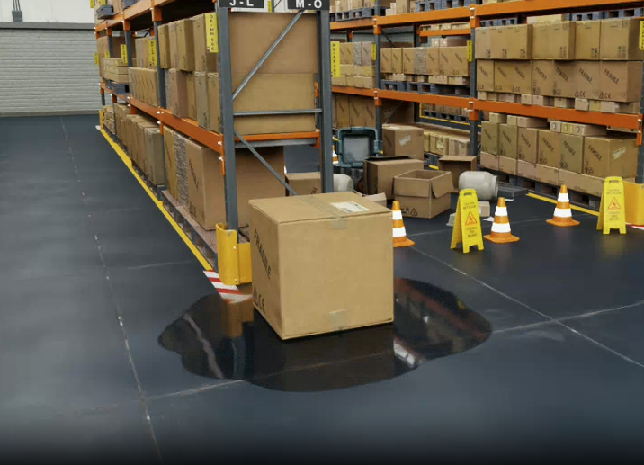
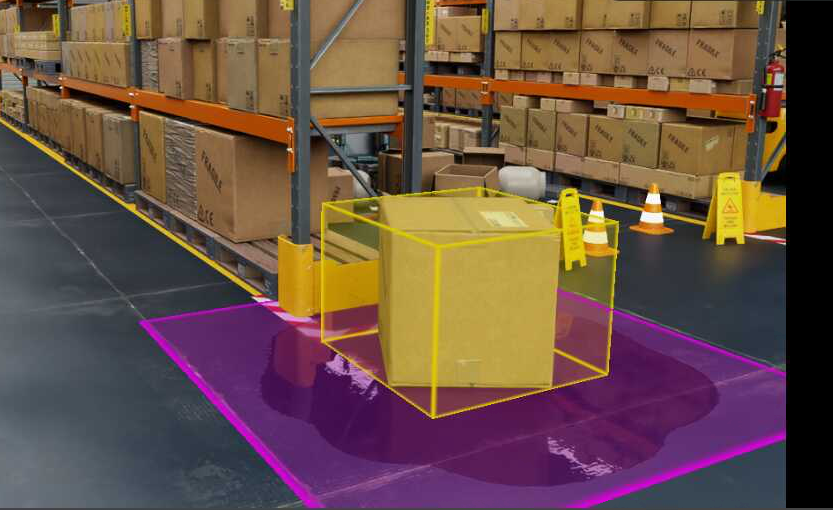

物理空间事件生成#
概述#
Isaacsim.Replicator.Incident (IRI) 是一个扩展，允许您在城市仿真场景中生成事件。
目前，IRI 支持以下自发事件类型：
箱子倾倒事件
火灾和烟雾事件
液体泄漏
要在场景中使用 IRI，请遵循以下工作流程：
1. 使用属性下拉菜单 + Add > Incident Tagging，为场景中的物品标记适当的事件类型。 例如，可以将物品标记为在倾倒事件中可能被撞倒的“松散物品”，在泄漏事件中可能泄漏或溢出液体的“可泄漏物品”，或在火灾事件中可能着火的“易燃物品”。
2. 如果您计划关闭并重新打开场景，请将场景保存为 usd 文件以提交该标记信息。 Content Browser 中提供了一个已应用标记的示例场景。
[Isaac Sim Assets Path]/Isaac/Samples/Replicator/Incidents/full_warehouse_with_incident_tags.usd.
注意
[Isaac Sim Assets Path]是您的 Isaac Sim 资产路径；请参阅 Isaac Sim Assets。有关如何验证资产访问权限并获取资产路径，请参阅 Verify asset access。
3. (IRI 独立版) 使用位于菜单 Tools > Action and Event Data Generation > Event Config File 中的 Event Config File 窗口，设置一个事件配置文件，以定义场景中将要发生的事件。 此配置也可以稍后保存和加载，但它不会保存到场景的 usd 文件中，必须通过 Event Config File 面板单独保存和加载。 配置事件或加载事件配置文件后，按 Set Up Events 以加载将在指定时间触发事件的演示对象。
4. 使用播放按钮运行仿真以预览场景。若要生成 SDG 数据，还可以使用 Event Config File 窗口中的 Record Events 按钮。
在仿真运行期间，事件项会被赋予语义标签，以支持 Replicator 的 SDG 收集。此外，还会将单独的事件报告写入为 JSON 文件（默认位于输出目录中的 incidents_report.json），以记录事件详细信息。请参阅 Incident Report JSON。
注意
在事件期间不会调整视口相机，因此您必须手动在场景中找到事件，并将视口相机移动到该位置以查看它。
IRI 独立版 UI 示例#
此示例展示了如何使用独立版 IRI UI 来设置在特定时间从货架上掉落的箱子。 它从 isaac assets 文件夹中的仓库场景开始：
[Isaac Sim Assets Path]/Environments/Simple_Warehouse/full_warehouse.usd.
1. 打开仓库场景，并确保已烘焙 navmesh。此示例使用 navmesh 来确定物品倾倒的方向。
在货架上选择箱子，并使用 IncidentTagging > LooseItem > Navmesh 按钮将其标记为散落物品。当这些箱子倾倒时，它们会朝最近的导航网格点从货架上掉落，这会自动使它们落向场景的可行走区域。
可选地，您可以保存场景以保存进度。
打开位于菜单 Tools > Action and Event Data Generation > Event Config File 中的 Event Config File 窗口。
移除默认的 Spill 和 Fire 事件，并检查剩余的默认倾倒事件设置。
倾倒物品设置为
$random_loose_item$，这将随机选择场景中的一个散落物品进行倾倒。触发器是基于时间的触发器，时间设置为3秒。按 Set Up Events 加载倾倒演示，该演示将在指定时间倾倒物品。
播放场景，并使用 Event Config File 窗口中的 Record Events 按钮收集事件数据。按 Stop Record 停止录制。
事件报告将写入指定的输出目录（默认文件名 incidents_report.json）。有关 JSON 布局，请参阅 Incident Report JSON。
场景标记#
要开始在场景中使用 IRI，请使用自定义 UI 标记所需的潜在事件项，然后使用标准保存对话框 File > Save 将场景保存到 usd 文件。
在 Stage 窗口或视口中右键单击一个 prim，选择 + Add > Incident Tagging，然后选择 loose items、spillable items 或 flammable items。
此菜单也可以在 Property 选项卡下的 + Add 按钮中找到。
可以通过启用视口顶部眼睛图标下的 Incident Scene Tags 可视化器来可视化场景中当前已标记的项目。点击 Show By Type > Incident Scene Tags，并切换您希望查看的已标记项目类别。
松散物品#
要使场景中的物品倒塌，会根据松散物品被赋予的标记类型，沿特定方向施加力。
随机方向#
标记为“随机方向”的物品将受到随机方向的力。
最近路径点方向#
UI 允许您向场景中添加“路径点”（Waypoints）。路径点以盒子的形式建模，可以放置在场景中的任意位置，并可调整大小以勾勒行走路径或通道。 标记为“最近路径点方向”的物体将受到一个力的作用，该力的方向指向最近路径点上的最近点。
创建路径点 Prim#
要向场景中添加路径点，请使用属性下拉菜单并选择 Create > Incident/Topple > Topple Destination。 此按钮将向场景中添加一个路径点，供“最近路径点”松散物体使用。 该 Prim 可以调整大小和复制，以创建 更复杂的结构，例如行走路径。
易燃物品#
易燃物品是指任何可以燃烧的物品。当物品被标记为易燃时， 它可以成为烟火事件的目标。该物品的 Prim 必须在层级结构下具有可见网格，以作为燃料源。
可泄漏物品#
可泄漏物品是指任何可以泄漏或溢出液体的物品。当物品被标记为可泄漏时， 它可以成为泄漏事件的目标。物品目前通过在场景中标记为“可泄漏区域”且位于可泄漏物品下方的 Prim 上实例化一个平坦的液体表面来发生泄漏。
可泄漏区域地板#
可泄漏区域是液体可能溢出到的 Prim。当发生泄漏事件时，液体将 实例化到位于泄漏物品下方且带有此标签的 Prim 上。如果不存在这样的 Prim，液体将 实例化在高度为 0.0 的地面上。
取消标记： 可以在“属性”面板中取消已标记物品的标记，方法是移除 Raw Usd Properties 部分中以 ‘isaacsim_replicator_incident_attr:’ 开头的所有属性。
IRI UI 中的事件配置#
IRI 提供了一个独立的用户界面用于配置事件。通过导航至 Tools > Action and Event Data Generation > Event Config File 即可访问此用户界面。 在此处，您可以添加并配置场景中的事件，并对其进行记录。
添加事件后，必须选择并配置一个触发器来启动该事件。 当前支持的触发器有
time：在指定时间开始事件carb_event：每当提供的 carb 事件发生时开始事件。Carb 事件是将 IRI 事件与其他扩展集成的主要方式。physical_event：使用另一个 IRI 事件的开始来触发此事件。
命令会生成一个 YAML 文件，该文件可以保存并在以后加载，也可以直接编辑以更改事件配置。由于此文件 不是 usd 场景的一部分，因此必须使用 Event Config File 面板中的保存和加载功能单独进行保存和加载。
IRI 脚本中的事件配置#
IRI 将事件配置保存到脚本文件中，可以直接编辑该文件以更改事件配置。
isaacsim.replicator.incident:
version: 0.1.0
global:
report_dir:
seed: 654321
event:
event_list:
- ToppleEvent:
name: my topple event
topple_item:
item: $random_loose_item$
topple_nearby_radius: 1.5
trigger:
type: time
time: 3
- FireEvent:
name: my fire event
flammable_item:
item: $random_flammable_item$
trigger:
type: time
time: 6
- SpillEvent:
name: my spill event
leakable_item:
item: $random_leakable_item$
target_size: 1.5
leak_duration: 5.0
trigger:
type: time
time: 9
在此示例中，定义了三个事件：一个倾倒事件、一个火灾事件和一个泄漏事件。 每个事件都有一个名称，以及一个简单的基于时间的触发器，该触发器将在指定时间启动事件。
接下来的几节将介绍各种事件类型及其各自可用的参数。
倾倒事件#


倾倒事件包含以下必填字段：
name：事件名称
- topple_item：要倾倒的物品。可以是特定标签物品的 prim 路径，也可以是由 $random_loose_item$ 指定的随机标签物品
topple_nearby_radius：此半径范围内的其他松散物品也将被倾倒。
trigger：事件的触发器。可以是基于时间的触发器。有关触发器部分，请参阅 触发器字段。
- ToppleEvent:
name: my topple event
topple_item:
item: $random_loose_item$
topple_nearby_radius: 1.5
trigger:
type: time
time: 1.0
场景中被倾倒的物品将被赋予语义标签 ‘incident_toppled_item’。
火灾事件#


火灾事件包含以下必填字段：
name：事件名称
flammable_item：要着火的物品。可以是特定标记物品的 prim 路径，也可以是由
$random_flammable_item$指定的随机标记物品trigger：事件的触发器。可以是基于时间的触发器。有关触发器部分，请参阅 触发器字段。
- FireEvent:
name: my fire event
flammable_item:
item: $random_flammable_item$
trigger:
type: time
time: 2.0
场景中的易燃物品将被赋予语义标签 ‘incident_flaming_item’。火焰的边界框也可以通过 Replicator 的边界框标注器导出，并带有语义标签 class: FireBoundingBox。由于火焰是体积图元（volume prim），基于光栅化的标注器（semantic_segmentation 和 bounding_box_2d_tight）默认会忽略它；请将 /syntheticdata/sensors/captureVolumes carb 设置设为 true，以便将其包含在输出中。
上面的 YAML trigger 在触发器上设置了以秒为单位的火灾开始时间；事件报告 JSON 在 trigger_data 下记录该触发器，并添加火灾特定的 simulation_data（以帧为单位的 start_time 和 fire_prim）。请参阅 Incident Report JSON。
泄漏事件#


泄漏事件包含以下必填字段：
name：事件名称
- leakable_item：要泄漏的物品。可以是特定标记物品图元的路径，也可以是由
$random_leakable_item$指定的随机标记物品
target_size：泄漏区域的大小。
leak_duration：泄漏的持续时间。
trigger：事件的触发器。可以是基于时间的触发器。有关触发器部分，请参阅 触发器字段。
- SpillEvent:
name: my spill event
leakable_item:
item: $random_leakable_item$
target_size: 3.0
leak_duration: 5.0
trigger:
type: time
time: 1.5
场景中的泄漏物品将被赋予语义标签 ‘incident_leaking_item’。液体本身被赋予单独的语义标签 ‘incident_liquid_spill’。
触发器#
每种事件类型都有一个 trigger 字段，用于指定事件何时发生。 以下是当前支持的各种触发器类型的参数
time
trigger:
type: time
# time: the time in seconds
time: 1.5
carb_event
trigger:
type: carb_event
# event_name: the name associated to the desired carb event
event_name: my_extension_custom_event
physical_event
trigger:
type: physical_event
# incident_name: Each physical event in IRI has a unique name.
# This triggers at the beginning of the provided IRI event
incident_name: MyFireEvent
SDG 集合#
SDG 集合由复制器的 SDG 写入器根据事件项的语义标签进行处理。记录事件时写入的结构化事件元数据文件为 JSON（默认为 incidents_report.json；请参阅 事件报告 JSON）。
它不是 YAML 事件日志。您在事件配置文件中保存和加载的事件配置仍为 YAML 格式，并且与事件报告是分开的。
事件报告 JSON#
记录过程在 isaacsim.replicator.incident.core 中使用 IncidentReport.start_recording。默认情况下，报告文件名为
incidents_report.json（可通过 file_name 参数覆盖）。
该文件是一个 JSON 对象，其顶层键为事件名称（字符串）。每个事件条目可能包含以下任意部分（除非针对特定事件类型另有说明，否则均为可选）：
event_data：来自配置或设置的特定于事件的字段。trigger_data：当事件由回调将触发器转发给事件处理程序的触发器启动时存在（典型情况是所有事件类型的时间触发器）。包含一个嵌套的trigger对象，其中包含type、priority和time等字段。基于时间的触发器使用以秒为单位的time（请参阅 触发器）。simulation_data：以仿真帧索引（整数）表示的仿真时间线元数据，而非秒数。除非使用您的时间线 FPS 或每帧刻度数进行转换，否则不要将这些数字等同于触发器时间。
按事件类型（当前实现）：
Topple：
event_data、trigger_data和simulation_data，包含start_time和end_time（帧）。end_time是倾倒观察器认为事件结束的时刻（例如，松散物体处于休眠状态），而不仅仅是触发瞬间。Spill：
event_data、trigger_data和simulation_data，包含start_time和end_time（帧）。该区间在仿真时间上从触发帧延伸至trigger_time + leak_duration（参见 YAML/UI 中的 spillleak_duration）。Fire：
event_data、trigger_data（当通过标准触发回调触发事件时），以及simulation_data，其中仅包含start_time（点火帧）和fire_prim（FlowEmitterBox 发射器 prim 的 USD 路径）。Fire 条目在simulation_data中不包含end_time。注意：event_data可能包含诸如flame_emitter之类的字段，该字段引用可燃物品的 prim 路径。fire_prim字段是独立的，指向用于烟火效果的发射器 prim。
解析器应将 simulation_data 键视为特定于事件类型的（例如，对于 fire 事件，end_time 不存在），并且如果较旧的构建版本或代码路径省略了某些部分，则应容忍缺失的部分。

API 用法#
此扩展还公开了一个 Python API，您可以使用它从自己的脚本中设置各种事故。
确保已启用 isaacsim.replicator.incident.core，并按照以下示例使用 API。
import carb
import isaacsim.core.utils.prims as prims_utils
import omni.kit.commands
import omni.usd
from isaacsim.replicator.incident.core import get_instance
from isaacsim.replicator.incident.core.extension import IncidentExt
from isaacsim.replicator.incident.core.settings import IncidentSettings
from isaacsim.storage.native import get_assets_root_path
from omni.metropolis.pipeline.triggers import TriggersManager
from pxr import Gf, UsdLux
SEED = 12345
SKY_TEXTURE = "/NVIDIA/Assets/Skies/Clear/evening_road_01_4k.hdr"
stage = omni.usd.get_context().get_stage()
assets_root = get_assets_root_path()
# Skybox backdrop via dome light HDRI (skipped if assets are unreachable)
if assets_root is not None:
dome = UsdLux.DomeLight.Define(stage, "/World/SkyDome")
dome.GetIntensityAttr().Set(1000.0)
dome.GetTextureFileAttr().Set(assets_root + SKY_TEXTURE)
dome.GetTextureFormatAttr().Set(UsdLux.Tokens.latlong)
else:
carb.log_warn("Could not find Isaac Sim assets folder; skipping sky backdrop")
# Get the incident manager and create pyro event manager
incident_manager = get_instance().get_incident_manager()
# Create a TimeTrigger and add callback
time_trigger = TriggersManager.get_instance().create_trigger_by_dict({"trigger": {"type": "time", "time": 1.0}})
time_trigger.add_callback(lambda trigger: carb.log_info("Trigger fired!"))
# Create 3 cubes with incident tags
# Cube 1: Flammable item (for fire events)
prims_utils.create_prim(
prim_path="/World/FlammableCube",
prim_type="Cube",
position=[-1.0, 0.0, 0.5],
attributes={"size": 0.5},
)
omni.kit.commands.execute("ApplyFlammableItemTagCommand", prims="/World/FlammableCube", flammable_item_type="Box")
# Create randomly selected fire event
pyro_event_manager = incident_manager.create_pyro_event_manager(
data_path=IncidentExt.data_path, seed=SEED, report=incident_manager.get_incident_report()
)
pyro_event_manager.generate_pyro_event(
name="fire event",
selected_flammable_item_prim_path=IncidentSettings.RANDOM_FLAMMABLE_ITEM,
pyro_nearby_radius=0.0,
trigger=time_trigger,
)
# Cube 2: Loose item (for topple events)
prims_utils.create_prim(
prim_path="/World/LooseCube",
prim_type="Cube",
position=[0.0, 0.0, 0.5],
attributes={"size": 0.5},
)
omni.kit.commands.execute("ApplyLooseItemTagCommand", prims="/World/LooseCube", loose_item_type="RandomDir")
# Create randomly selected topple event
topple_event_manager = incident_manager.create_topple_event_manager(
seed=SEED, report=incident_manager.get_incident_report()
)
topple_event_manager.generate_topple_event(
name="topple event",
selected_loose_item=IncidentSettings.RANDOM_LOOSE_ITEM,
topple_nearby_radius=0.01,
trigger=time_trigger,
)
# Cube 3: Leakable item (for spill events)
prims_utils.create_prim(
prim_path="/World/LeakableCube",
prim_type="Cube",
position=[1.0, 0.0, 0.5],
attributes={"size": 0.5},
)
omni.kit.commands.execute("ApplyLeakableItemTagCommand", prims="/World/LeakableCube", leakable_item_type="Item")
# Create a plane for the floor and tag it as a spillable area
omni.kit.commands.execute(
"AddGroundPlaneCommand",
stage=stage,
planePath="/World/Floor",
axis="Z", # Normal along Z-axis for x-y plane (ground)
size=25.0,
position=Gf.Vec3f(0.0, 0.0, 0.0),
color=Gf.Vec3f(0.5, 0.5, 0.5),
)
omni.kit.commands.execute("ApplySpillableAreaTagCommand", prims="/World/Floor", spillable_area_type="Floor")
# Create randomly selected spill event
spill_event_manager = incident_manager.create_spill_event_manager(
seed=SEED, report=incident_manager.get_incident_report()
)
spill_event_manager.generate_spill_event(
name="spill event",
selected_spillable_item=IncidentSettings.RANDOM_LEAKABLE_ITEM,
target_size=1.0,
leak_duration=1.0,
trigger=time_trigger,
)
现在，您可以按播放按钮以窗口模式观察模拟事件，或者在通过 Python 以无头模式运行场景时，使用 Isaac 的 SimulationApp API 逐步执行场景帧。